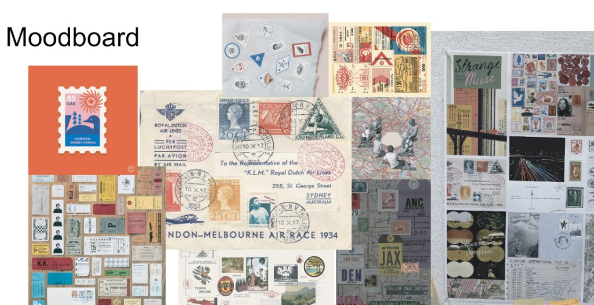
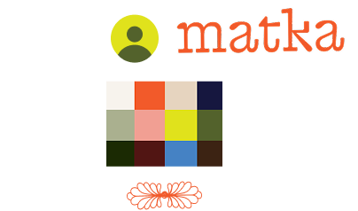

Requirements, decoded
See what applies to your passport, route, and dates—without opening ten browser tabs.
Stamped with intention.
Travel · Memory · Calm
Matka brings together what you need before you leave, what you collect along the way, and who you are as a traveler—wrapped in a quiet, postage-inspired interface.
The visual language comes from old stamps, postmarks, boarding stubs, and handwritten travel journals. We keep the tactile warmth, but simplify interaction so the product still feels clear and modern.


Visas, documents, and deadlines—explained in plain language so the first day of your trip feels like day one, not day zero of stress.
See what applies to your passport, route, and dates—without opening ten browser tabs.
Save progress, set reminders, and pick up exactly where you left off on mobile or web.
Timestamps and citations behind every rule change—built for anxious planners (and their families).
From first search to boarding pass, Matka follows the arc of how you actually plan—not a generic wizard.
Light-touch hints while you compare routes and dates.
At booking, only the steps that matter for this itinerary.
Documents, insurance, and registrations in one calm queue.
Last-minute changes surfaced before you reach the airport.
Collect tickets, photos, and notes on stamp-edged cards—so revisiting a trip feels tactile, not like another folder in the cloud.
Gentle, timely nudges for gates, documents, and destination quirks— without buzzy notifications that pull you out of the experience.
Passports, companions, loyalty IDs, and accessibility preferences— kept in a single place that respects your privacy.
Reserve your spotDesigned as a capstone prototype: visual language from Figma, narrative aligned with a product brief—ready for user testing and partner conversations.
The prototype focuses on cross-border complexity, but the same patterns work for domestic hops—documents, plans, and memories in one flow.
The Figma explores mobile-first layouts; this site is a lightweight preview. Native and PWA directions are both on the table for the capstone roadmap.
Yes—that is part of the broader brief (similar to industry players like Sherpa). Reach out via the waitlist to discuss API and white-label interest.
Leave your email for updates—or open the Figma and brief from the footer to dive deeper.
Prototype form: connect your endpoint when you are ready.